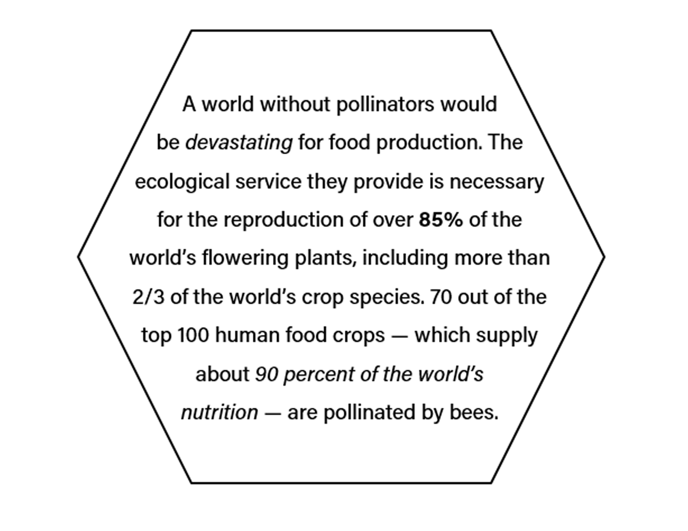
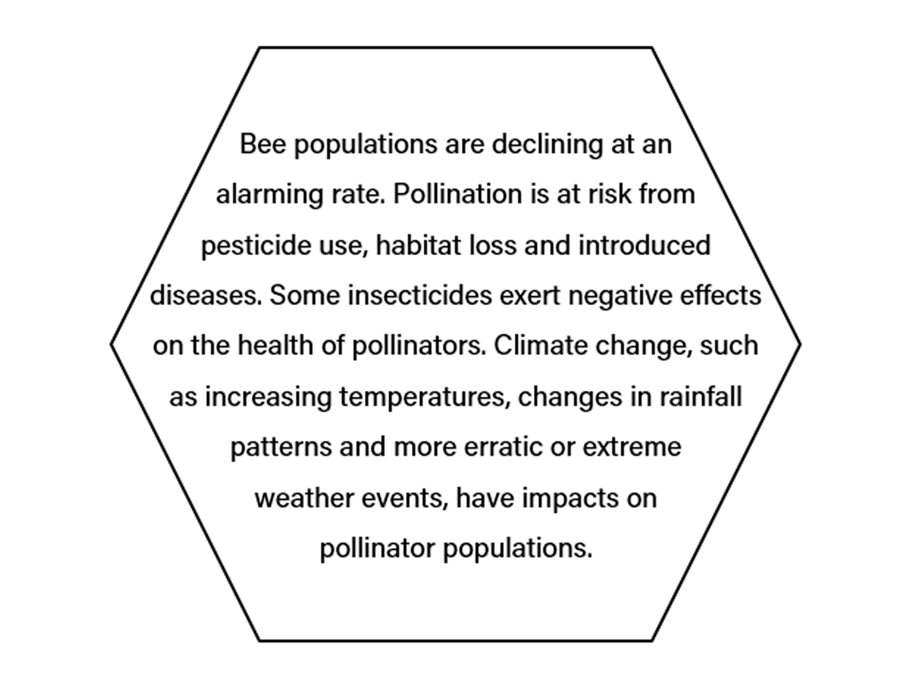
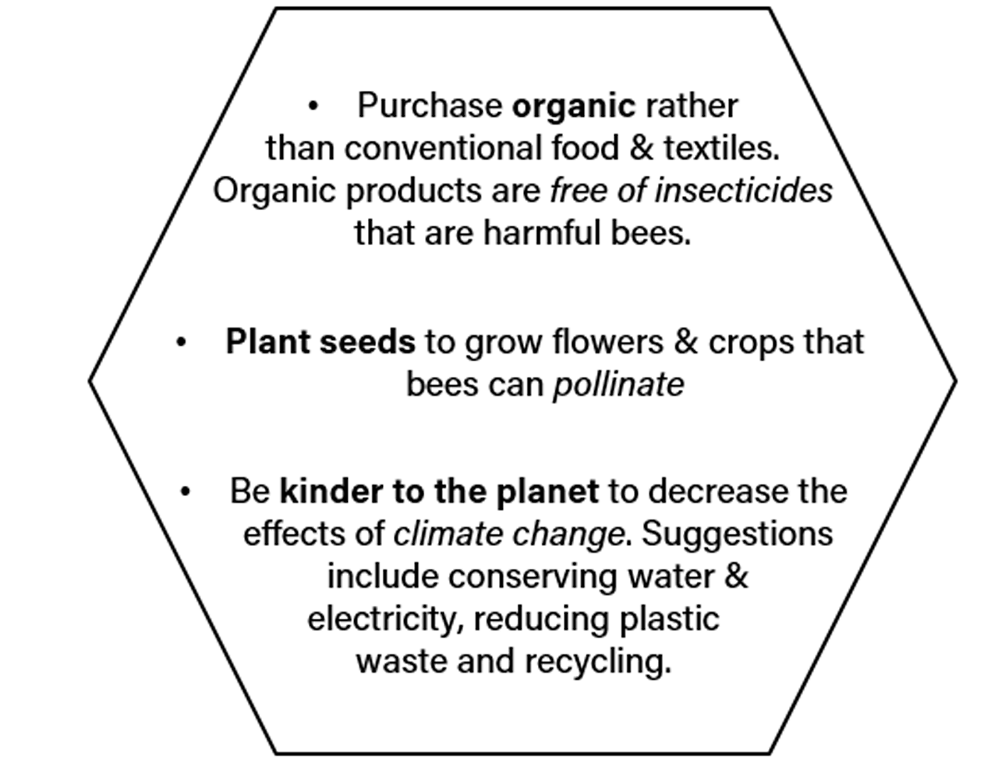

In the Textile Development and Marketing AAS program, I learned about the environmental aspects of textiles. The pesticides used on non-organic cotton have many harmful effects, one of which is that they are harmful to bees. At first this didn't seem like a big deal, but after further reseach, it is. Please read below to learn more!
Why do we need bees?

What's the problem?

How can I help?

Sources
- http://www.greenpeace.org/usa/sustainable-agriculture/save-the-bees/
- https://www.cheerios.com/bringbackthebees
- http://www.xerces.org/pollinator-conservation/
- http://sos-bees.org/causes/